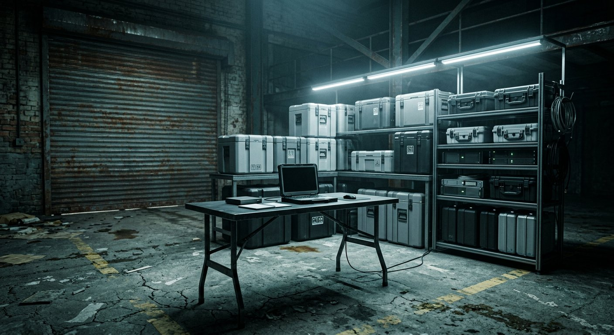

Haavk Corp
Tenue de positionOBJECTIF D'OUVERTURE — PROTÉGER UNE LIVRAISON DE FRET

L'objectif d'ouverture de Haavk est défensif : le fret se déplace, vous tenez le terrain autour. Vous savez à l'avance où vous devrez être, ce qui vous laisse préparer les angles — mais les autres le savent aussi.